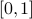
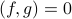
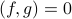

Orthogonality
We spent the rest of class (Mon Week 2) discussing the concept of orthogonality. Prof. Osgood presented a beautifully motivated and clean picture for why it was useful to define a notion of ‘‘orthogonality’’ for functions. I won't go through the whole background of linear algebra again here, but I'll state the main point:
You can think of functions as vectors in an infinite-dimensional vector space. Let us consider the set of all complex-valued, square-integrable functions defined on the interval . If you add together two such functions, you get another one, and if you scale such a function by a number, you also get another function of the same sort. So these functions form a vector space.
It turns out that this vector space has a few other nice features. A useful norm for the vector space is
and its corresponding inner product is
We say that two functions  and
and  are orthogonal if .
are orthogonal if .
We completed the analogy in class the next day (Wed Week 2), but I haven't had time to type that up yet. I'll get around to it someday.